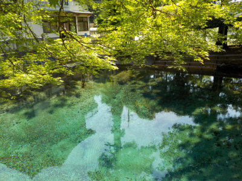
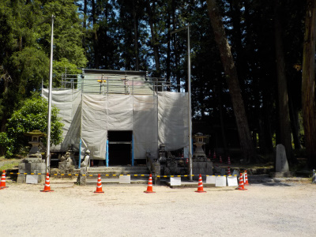
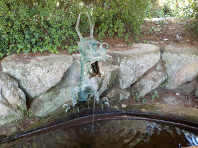
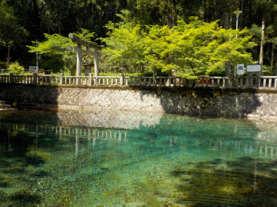

別府弁天地なの別府弁天池なの？
2009/05/25
山口県西部ドライブマップ（2019/03/01-2020/02/29）によると、
別府弁天地と別府弁天池の二通りの表記がありました。
池があるから池が正しいんだろうな。

涼しげで綺麗な水がわき出ていました。
見てるとリラックス出来ました。ヒーリングスポットですね。

神社がありますが、ただ今工事中でした。
別府厳島神社だそうです。そこにある弁天池なので、別府弁天池って言うみたい。
厳島神社は無視みたい。

手水舎の龍がかっこよかったので写真を撮りました。
写真で見るとバックの石と同化して、ちょっとスケルトンっぽくなっりました。
更にかっこよくなりました。

違うアングルから写真を撮っても綺麗。
本物って感じの観光地でした。